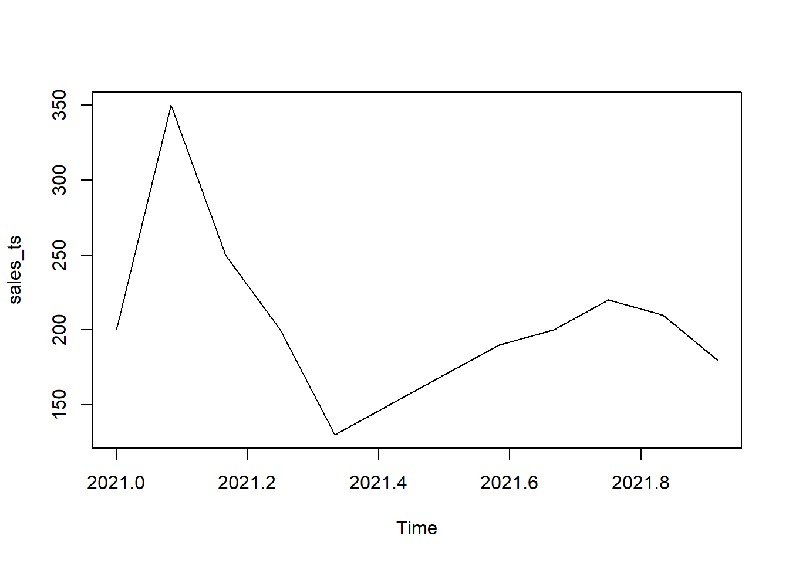

Bab 1 Pendahuluan
Ada suatu pameo waktu hari ini adalah menetukan hari esok san hari ini adalah hari hasil dari hari yang lalu atau kemarin. Tentu ini adalah suatu keyakinan dalam diri masing-masing individu. Apa yang kita kerjakan hari ini mungkin dapat merubah hal yang belum kita capai hari ini.Seberapa capaian kita hari ini juga mungkin itu karena kerja kita di masa yang lalu. Manusia boleh berenencana tetapi Allah lah yang menetukan. Nah bicara rencana kita juga harus berencana untuk mendapatkan hasil yang maksimal. Rencana akan membantu kita mendapatkan tujuan apa yang kita inginkan. Ada dua peramalan berdasarkan time series dan ekonometrik. Kalau berdasarkan time series terjadi karena data masa lampua merefleksikan data masa depan. Penentuan metode daripada forecast bergantung dengan type data. 1 ternyata untuk meramal dengan menggunakan smooth ekstra polating. Ramalan ini mengguanakan data waktu berkala atau data time series. Data yang diumpulkan berdasarkan urutan waktu dari variabel yang satu. Kita menuju kembali kalau dalam suatau varibel adalah karakterisitik dari sample. Data dari time series itu berasal dari organisasi seperti Badan Pusat Statistik yang menerbitkan pendapatan domestik dari negara ini. Sebagai badan yang mengurusi masalah data BPS menyimpan begitu banyak data tersebut. Bagi statistikawan data-data tersebut sangat berguna. Hanya orang awam yang tidak mengindahkan adanya begitu banya tawanan. Dengan adanya data kita menjadi tahu. Kita bisa menggunakan data dengan adanya rencana. Negeri yang mau menyejahterakan rakyatnya harus memerlukan banyak data untuk memenuhi kebutuhan masyarakat dan memajukan negaranya.
1.1 Semua antisipasi
Seperti contoh diatas apakah yang anda lalukan ketika harag emas lima bulan kemudian naik dua kali. Setiap orang akan menahan emas dan yang ada akan membeli emas. Efek informasi membuat seseorang untuk mengantisipasi informasi yang sudah tersebar keseluruh publik. Semua orang berpikir bahwa apa yang akan mereka dadapi dengan strategi yang sudah ada. Kalau secara logis mereka yang mengetahui harga akan naik maka mereka akan menahan lebih banyak dan permintaan emas akan banyak sehingga justru harga emas akan naik bukan lima bukan ke depan melainkan lima hari setelah adanya informasi tersebut. Dengan harganya semakin meningkat maka akan ada dua kemungkinan. Kalau yang memang sedang membutuhkan uang akan menjual emas tersebut namun yang tidak butuh-butuh amat akan tetap mempertahanakan emas tersebut dan mungkin tidak akan menjual hingga lima bulan kemudian. Bagi spekulan ia menunggu untuk melihat kapan waktunya. Ia pikir dengan lima bulan kemudian emas akan begitu menarik hingga pada harga yang tidak masuk akal atau 10 kali lipat dari sebelumnya, Tetapi ternyata tidak karena harga sudah kepayahan pada saat dua bulan pertama sejak ada peramalan. Hal ini adalah karena hasil dari antisipasi. Dengan harga yang melonjak begitu besar maka orang yang mau membeli bisa jadi tidak akan membeli emas walau ia yakin juga beberapa bulan ke depan harga emas akan naik. Keterbatasan dari modal membuat mereka terdiam atau tidak melakukan aksi untuk menjual emas. Bagi yang tidak punya uang maka ia menjual emasnya dan mungkin diikuti gerakan menjual emas oleh beberapa orang sehingga harga emas akan tumbang dalam waktu tersebut. Adanya gerakan tersebut membuat orang ragu dengan hal yang sudah di publish tersebut. Tentu sebagian masih percaya debgfab ramalan tersebut tetapi apakah semua orang percaya dengab hal tersebut. Rumor yang lain menyebabkan harga emas sedikit turun karena di pasar dengan temuan tambang yang baru atau di tempat lain sedang mengalami kesulitan likuiditas sehingga menjual emasnya kepada negeri lain. Kemudian harga emas turun menurun kembali. Para spekulan dengan adanya temuan emas ini dan mereka segera menjual keburu belum hancur harganya Mereka sebenarya sudah rugi karena mereka membelinya dengan harga yang mahal. Emas memang tidak akan nilainya nol meski sesulit apapaun namun dapat turun walau turunnya tidak besar namun spekulasi yang menggunakan dana besar membeli emas banyak sudah rugi banyak dengan hal tersebut. Hal yang paling ekstrim terjadi di pasar modal. Sebagian besar atau mayoritas pelaku pasar akan menggunakan peramlaan. Mereka mengumpulkan dan membuat peramalan akan data menggunakan data lampau historical data. Mereka yakin dengan hal itu. Hanya saja yang dapat meramal saham di tempat itu tidak satu. Hampir semuanya dapat meramal saham. NAgkana katanya merena bisa untuk menilai mana penuruna dan kenaikan yang asli.
Kesalahan peramalan Sudah menjadi jamianan tidak ada ramalan yang 100% karena kalau ada yang bisa meramal sedemikian akurat maka ia adalah orang yang penguasa di alam ini. Dengan memiliki data yang akurat begitu ia bisa mengumpulkan banyak uang dan menjadi berkuasa di muka bumi ini. Persoalan peramalan adalah meleset atau tingkat kesalahan (error). Ada peramalan yang sama sekali tidak membantu karena tingkat kesalahan begitu besar sekali. Ketika sudah terjadi peramalan tersebut atau waktu yang diramalakn sudah datang maka nilai tersebut berbeda dnegan nilai peramalan. Misalnya harga peramalan sekitar 3000 namun yang terjadi adalah 600 malah harga menjadi turun sehingga si investor yang mempercayai ramalan tersebut rugi berlipat. Akan tetapi ketika harga itu malah naik lebih besar dari ramalan maka itu menjadi suatu kebahagian sendiri. Akan tetapi peramalan yang salah akan mendatangkan kerugian yang banyak bagi prang yang menggunakan data tersebut (user). Hal yang benar adalah mencari bentuk peramalan yang mendekati dengan kenyataan atau yang paling mendekati dengan kenyataan. Sudah beberapa banyak metode yang dikembangnkan dengan kecanggihan ilmu komputer dan berkembangnya ilmu stataitik yang ada sekarang ini. Penghitungan dari angka dengan menggunalan kompuetr memang dapat mengurangi dari kesalahan dari peramalan namun tetap saja peramalan itu akan selalu menghasilkan kesalahan. Tidak semua data yang ada mempunyai sifat yang sama. Oleh karena itu metode yang ada tidak bisa diaplikasikan kepada data time series semunya. Untuk itu kita memahami dari data time series tersebut. Bisa jadi suatu data cocok untuk metode A akan tetapi tidak cocok dengan suatu data Data time series adalah data yang menurut pencatatan deret waktu. Maka kita perlu untuk membuat data stationer. Data stationer adalah data dimana situasi yang terjadi ketika terjadi sesuatu yang
1.2 Jangka waktu Peramalan
Peramalaan adalah sesuatu yang tidak pasti. Tentu ada penyimpangan dalam melakukan peramalan. Ketika penggunaan untuk jangka waktu yang pendek bukan menjadi masalah yang besar. Setiap orang bisa meramal apa yang terjadi pada minggu depan. Apakah ia akan berubah nasibnya. Mungkin ia akan tahu bahwa nasibnya tidak akan berubah dalam waktu yang pendek. Kalau ia optimispun ia akan yakin bahwa perubahan itu akan perlahan bisa dalam waktu 1-2 tahun. Begitu juga setiap orang yang akan merubah dalam beberapa waktu pasti akan mudah sekali. Misalnya, harga bahan bakar untuk bulan ini tidak akan naik begitu saja. Hal itu dapat dilihat dari keadaan ekonomi makro dunia yang tidak menunjukkan perubahan dalam peramalan harga dalam waktu dekat tersebut. Peristiwa yang penting tidak ada yang dapat merubah karena sepertinya keadaan tidak dapat. Hal itu berlainan kalau yang terjadi di masa yang sangat lama sekali . Perubahan berjalan dengan lamban sehingga pada puncaknya mengalami sesuatu yang sangat ekstrim sekali
1.3 Persiapan Data Rstudio
Mengelola data dalam RStudio cukup unik. Kalau software berbayar kita hanya mengimpor data dari data yang sudah ada dalam bentuk excel, csv atau text. Ketika kita mengimpor data dari file tersebut kita tinggal mengolah data tersebut. RStudio tentu berbeda dengan lainnya ia harus mengimpor data bisa dalam bentuk excel, csv, atau txt akan tetapi data dalam bentuk data.frame. Model atau tipe data frame yang ada di R tidak akan bisa diolah dalam bentuk time series. Untuk itu, data.frame yang sudah ada dibuatkan terlebih dahulu data frame. Setidaknya ada beberapa cara namun di artikel kali ini : 1. Membuat vektor dan membuat time series
Saya akan membuat filenya salesarima kemudian saya masukkan 12 data perbulan. Dari sini saya akan mendapatkan data time series. ada fungsi untuk mengecek ulang apakah yang saya lakukan ini.
salesarima<-c(200,350,250,200,130,150,170,190,200,220,210,180)
#ini adalah tampilan yang saya sudah buat
salesarima## [1] 200 350 250 200 130 150 170 190 200 220 210 180#Ini hal yang penting yakni saya akan membuat waktunya yakni bulan dalam setahun saya akan memulai 2021 dengan frekuensi 12. Artinya saya akan membuat sebuah data yang bulanan selama tahun 2021. Saya namakan file lagi dengan sales_ts
sales_ts<-ts(salesarima,start=c(2021),frequency=12)
sales_ts## Jan Feb Mar Apr May Jun Jul Aug Sep Oct Nov Dec
## 2021 200 350 250 200 130 150 170 190 200 220 210 180## [1] FALSE## [1] TRUE
- Mengupload dari data yang ada dari file komputer KIta bisa mengupload dalam bentuk spreadsheet seperti xls, csv, txt dan lain-lain. KAlau kita menggunakan data file yang berada du dakam komputer yang ad di hardware kita.
## Index Date Close.Last Volume Open High
## 1 1 09/28/2021 42092.6 N/A 42553.8 42108.5
## 2 2 09/27/2021 43863.5 N/A 41960.3 44293.2
## 3 3 09/26/2021 43889.5 N/A 42199.8 44293.2
## 4 4 09/25/2021 42234.2 N/A 42634.9 42737.6
## 5 5 09/24/2021 42654.1 N/A 44289.0 42944.0
## 6 6 09/23/2021 44365.4 N/A 44070.0 44977.5
## 7 7 09/22/2021 43959.2 N/A 42051.4 44162.9
## 8 8 09/21/2021 42206.2 N/A 42684.5 42393.4
## 9 9 09/20/2021 42686.2 N/A 45584.9 43035.6
## 10 10 09/19/2021 45526.3 N/A 47840.2 47323.9
## 11 11 09/18/2021 47940.9 N/A 47926.1 48341.9
## 12 12 09/17/2021 47526.6 N/A 48032.7 47572.0
## 13 13 09/16/2021 47876.3 N/A 47625.4 48095.8
## 14 14 09/15/2021 47545.5 N/A 47091.9 48181.9
## 15 15 09/14/2021 47097.4 N/A 45193.2 47396.0
## 16 16 09/13/2021 45281.7 N/A 44845.0 45353.8
## 17 17 09/12/2021 44973.6 N/A 45319.6 46269.8
## 18 18 09/11/2021 45308.7 N/A 45190.1 45338.8
## 19 19 09/10/2021 45023.2 N/A 46721.5 45476.1
## 20 20 09/09/2021 46604.7 N/A 45973.9 47021.6
## 21 21 09/08/2021 45904.5 N/A 46444.2 46341.9
## 22 22 09/07/2021 46533.2 N/A 52649.9 47316.9
## 23 23 09/06/2021 52639.6 N/A 51601.2 52885.3
## 24 24 09/05/2021 50129.3 N/A 50099.3 50285.9
## 25 25 09/04/2021 49716.3 N/A 50280.5 50285.9
## 26 26 09/03/2021 50267.4 N/A 49485.2 50346.3
## 27 27 09/02/2021 49446.8 N/A 49567.0 49497.3
## 28 28 09/01/2021 49571.7 N/A 47050.5 49870.3
## 29 29 08/31/2021 46918.2 N/A 47151.5 47289.5
## 30 30 08/30/2021 47177.0 N/A 47964.3 47204.9
## 31 31 08/29/2021 47944.6 N/A 48231.9 48886.0
## 32 32 08/28/2021 48258.5 N/A 48862.5 49621.7
## 33 33 08/27/2021 48880.7 N/A 46822.3 49289.4
## 34 34 08/26/2021 46867.7 N/A 47263.6 49347.8
## 35 35 08/25/2021 47967.1 N/A 47993.2 49347.8
## 36 36 08/24/2021 48000.6 N/A 49341.6 48277.5
## 37 37 08/23/2021 49352.5 N/A 50263.4 49685.2
## 38 38 08/22/2021 50226.5 N/A 48807.3 50329.4
## 39 39 08/21/2021 48736.4 N/A 48834.5 49164.1
## 40 40 08/20/2021 48901.9 N/A 47056.5 49334.0
## 41 41 08/19/2021 47048.0 N/A 44073.6 47377.9
## 42 42 08/18/2021 44177.2 N/A 45048.2 45184.6
## 43 43 08/17/2021 44959.0 N/A 46393.3 45133.9
## 44 44 08/16/2021 46399.9 N/A 47375.4 46589.1
## 45 45 08/15/2021 47497.9 N/A 46870.1 48002.4
## 46 46 08/14/2021 47015.6 N/A 47546.0 47344.1
## 47 47 08/13/2021 47500.4 N/A 44950.2 47826.5
## 48 48 08/12/2021 44962.2 N/A 45916.8 45012.1
## 49 49 08/11/2021 46123.5 N/A 45585.1 46213.8
## 50 50 08/10/2021 45600.4 N/A 45714.8 45983.0
## 51 51 08/09/2021 45689.8 N/A 43504.9 46663.4
## 52 52 08/08/2021 43552.4 N/A 44327.7 43958.6
## 53 53 08/07/2021 44307.8 N/A 43712.7 44749.5
## 54 54 08/06/2021 43672.9 N/A 40223.3 43707.4
## 55 55 08/05/2021 40166.6 N/A 39433.6 40979.0
## 56 56 08/04/2021 39431.3 N/A 37972.1 39834.2
## 57 57 08/03/2021 38054.8 N/A 38653.8 38555.5
## 58 58 08/02/2021 38569.7 N/A 39789.5 39766.6
## 59 59 08/01/2021 39782.5 N/A 42446.5 40078.5
## 60 60 07/31/2021 42281.8 N/A 41818.0 42361.8
## 61 61 07/30/2021 41914.8 N/A 39981.7 42285.3
## 62 62 07/29/2021 39976.3 N/A 39657.8 40245.6
## 63 63 07/28/2021 39740.4 N/A 39845.0 40205.2
## 64 64 07/27/2021 39831.3 N/A 36552.0 40296.4
## 65 65 07/26/2021 36914.2 N/A 38072.6 37514.9
## 66 66 07/25/2021 38138.0 N/A 33824.8 39639.9
## 67 67 07/24/2021 34234.5 N/A 33670.3 34302.5
## 68 68 07/23/2021 33611.3 N/A 32591.5 33776.7
## 69 69 07/22/2021 32537.4 N/A 31941.1 32746.2
## 70 70 07/21/2021 31960.1 N/A 29841.3 32352.3
## 71 71 07/20/2021 29849.9 N/A 29609.5 29901.8
## 72 72 07/19/2021 29619.3 N/A 31553.7 31040.8
## 73 73 07/18/2021 31577.7 N/A 32151.5 31838.7
## 74 74 07/17/2021 32132.1 N/A 31310.2 32408.2
## 75 75 07/16/2021 31326.6 N/A 31899.8 31616.8
## 76 76 07/15/2021 31906.4 N/A 32760.4 32016.9
## 77 77 07/14/2021 32711.8 N/A 32543.1 33157.0
## 78 78 07/13/2021 31785.0 N/A 33075.9 32778.8
## 79 79 07/12/2021 33139.4 N/A 34267.6 33220.4
## 80 80 07/11/2021 34504.4 N/A 33535.6 34507.9
## 81 81 07/10/2021 33461.4 N/A 33725.0 33794.9
## 82 82 07/09/2021 33827.8 N/A 32747.0 34221.0
## 83 83 07/08/2021 32956.6 N/A 33372.9 32993.5
## 84 84 07/07/2021 33359.6 N/A 34444.3 33923.2
## 85 85 07/06/2021 34428.1 N/A 33923.3 34495.7
## 86 86 07/05/2021 33883.2 N/A 34371.6 34157.4
## 87 87 07/04/2021 34334.7 N/A 34742.8 35300.5
## 88 88 07/03/2021 34771.6 N/A 33299.0 34909.8
## 89 89 07/02/2021 33396.0 N/A 32909.5 33895.1
## 90 90 07/01/2021 32895.6 N/A 34155.1 33925.9
## 91 91 06/30/2021 34202.6 N/A 35071.7 35030.7
## 92 92 06/29/2021 35254.7 N/A 34584.1 36089.5
## 93 93 06/28/2021 34555.3 N/A 34396.1 35125.8
## 94 94 06/27/2021 34458.7 N/A 33152.6 34884.0
## 95 95 06/26/2021 33189.6 N/A 32000.0 33192.3
## 96 96 06/25/2021 32063.6 N/A 35103.5 32214.2
## 97 97 06/24/2021 35098.7 N/A 32612.9 35490.9
## 98 98 06/23/2021 32466.3 N/A 33989.2 33798.6
## 99 99 06/22/2021 33811.7 N/A 33028.2 34236.2
## 100 100 06/21/2021 33025.6 N/A 34691.0 33181.2
## 101 101 06/20/2021 34681.0 N/A 35531.9 35708.4
## 102 102 06/19/2021 35636.2 N/A 35084.1 35788.1
## 103 103 06/18/2021 34963.5 N/A 37925.6 36283.5
## 104 104 06/17/2021 37940.2 N/A 38862.5 38166.0
## 105 105 06/16/2021 38834.5 N/A 40031.8 38963.7
## 106 106 06/15/2021 40023.9 N/A 40403.5 40167.5
## 107 107 06/14/2021 40479.3 N/A 38995.2 40838.1
## 108 108 06/13/2021 38826.4 N/A 34881.8 39784.6
## 109 109 06/12/2021 34950.8 N/A 35585.4 35903.9
## 110 110 06/11/2021 35339.5 N/A 36758.6 37437.3
## 111 111 06/10/2021 36665.9 N/A 36955.5 37177.3
## 112 112 06/09/2021 37012.9 N/A 32881.0 37595.3
## 113 113 06/08/2021 32952.3 N/A 32819.6 33502.8
## 114 114 06/07/2021 32869.0 N/A 36384.0 34047.8
## 115 115 06/06/2021 36404.7 N/A 36002.2 36754.6
## 116 116 06/05/2021 35968.9 N/A 37400.3 36225.5
## 117 117 06/04/2021 37419.3 N/A 37928.2 37811.3
## 118 118 06/03/2021 37877.1 N/A 37636.0 39255.4
## 119 119 06/02/2021 37581.7 N/A 36479.5 37812.7
## 120 120 06/01/2021 36395.6 N/A 36699.5 36856.2
## 121 121 05/31/2021 36617.3 N/A 34503.3 37850.3
## 122 122 05/30/2021 34408.7 N/A 34780.3 35931.9
## 123 123 05/29/2021 34670.7 N/A 36465.5 34773.6
## 124 124 05/28/2021 36324.7 N/A 38279.0 36717.8
## 125 125 05/27/2021 37973.8 N/A 37616.5 38844.1
## 126 126 05/26/2021 37470.0 N/A 39562.9 39249.0
## 127 127 05/25/2021 39444.5 N/A 38360.3 39497.3
## 128 128 05/24/2021 38288.4 N/A 35268.6 39740.8
## 129 129 05/23/2021 35298.3 N/A 37460.4 35863.1
## 130 130 05/22/2021 37436.4 N/A 36979.4 38248.7
## 131 131 05/21/2021 36906.3 N/A 40710.8 38056.8
## 132 132 05/20/2021 40779.5 N/A 38170.6 42108.3
## 133 133 05/19/2021 38220.1 N/A 40491.1 38573.3
## 134 134 05/18/2021 40569.0 N/A 45042.4 43516.6
## 135 135 05/17/2021 44847.2 N/A 44482.0 45231.4
## 136 136 05/16/2021 43493.4 N/A 48167.2 46545.4
## 137 137 05/15/2021 47875.9 N/A 50046.3 48323.8
## 138 138 05/14/2021 49762.8 N/A 49176.2 50640.9
## 139 139 05/13/2021 49391.5 N/A 50260.7 50387.3
## 140 140 05/12/2021 49715.2 N/A 57762.7 50843.0
## 141 141 05/11/2021 57752.6 N/A 55164.2 57753.0
## 142 142 05/10/2021 55126.4 N/A 59400.6 56384.2
## Low
## 1 40815.0
## 2 42949.7
## 3 42949.7
## 4 41943.9
## 5 42073.8
## 6 44336.6
## 7 43090.1
## 8 40585.7
## 9 40401.5
## 10 45310.7
## 11 47650.8
## 12 47070.5
## 13 47466.5
## 14 47358.8
## 15 46953.7
## 16 44718.7
## 17 44830.0
## 18 44755.2
## 19 44766.6
## 20 46287.7
## 21 45609.0
## 22 46329.3
## 23 52388.6
## 24 49492.4
## 25 49705.6
## 26 49603.1
## 27 48377.3
## 28 48612.9
## 29 46533.1
## 30 46709.3
## 31 47822.7
## 32 48101.9
## 33 48846.4
## 34 46584.0
## 35 47898.8
## 36 47669.8
## 37 48812.4
## 38 49099.0
## 39 48623.7
## 40 48744.8
## 41 46646.8
## 42 44086.7
## 43 44230.0
## 44 45323.2
## 45 46814.1
## 46 46928.0
## 47 47408.6
## 48 44242.4
## 49 45432.5
## 50 45367.9
## 51 45659.4
## 52 42824.1
## 53 43842.5
## 54 42611.0
## 55 39967.4
## 56 39202.6
## 57 37904.4
## 58 38543.5
## 59 39306.9
## 60 41123.8
## 61 41645.5
## 62 39769.8
## 63 39340.8
## 64 38946.6
## 65 36427.4
## 66 35236.7
## 67 33956.8
## 68 33412.9
## 69 32215.0
## 70 31803.1
## 71 29519.3
## 72 29574.0
## 73 31462.8
## 74 31490.2
## 75 31207.8
## 76 31581.1
## 77 32657.7
## 78 31695.8
## 79 32839.5
## 80 34077.1
## 81 33434.4
## 82 33678.0
## 83 32367.0
## 84 33095.9
## 85 33966.6
## 86 33669.5
## 87 34309.2
## 88 33363.3
## 89 33363.3
## 90 32778.7
## 91 34174.5
## 92 35148.9
## 93 34247.6
## 94 34319.5
## 95 32041.7
## 96 31360.1
## 97 34304.2
## 98 32376.2
## 99 31736.5
## 100 31216.0
## 101 34676.1
## 102 35176.2
## 103 34845.5
## 104 37231.8
## 105 38231.4
## 106 39645.3
## 107 39920.0
## 108 38769.9
## 109 34876.1
## 110 35335.8
## 111 36003.3
## 112 36759.8
## 113 32428.6
## 114 32447.0
## 115 35576.3
## 116 35421.5
## 117 36666.8
## 118 37442.6
## 119 37193.6
## 120 35981.1
## 121 36539.1
## 122 34330.2
## 123 33441.0
## 124 35651.4
## 125 37790.4
## 126 37190.8
## 127 37847.0
## 128 37875.1
## 129 34715.3
## 130 36822.9
## 131 36606.7
## 132 40521.5
## 133 35010.4
## 134 40164.2
## 135 43186.8
## 136 43072.5
## 137 46574.6
## 138 49303.7
## 139 49258.0
## 140 46331.1
## 141 56597.1
## 142 54550.4
## [ reached 'max' / getOption("max.print") -- omitted 727 rows ]Data yang kita hasilkan bukanlah data time series untuk itu kita merubah ke dalam data ditem series. Data time series itu berkaiatan dengan waktu yang ada di kolom kedua atau Date. Kita rubah datanya dalam bentuk string agar bisa digabungkan dalam time series. Merubah data yang sudah ada di date frame dengan menggunakan format as.Date. dalam Tabel data kita akan menggunakan format seperti bulan (m), tanggal (d), dan tahun (y). Harus diperhatikan kalau dengan y kecil maka tahun akan sama menjadi 2020 . pada contoh saya masukkan data tanggal dan saya namankan sebagai bitcoindate dengan format bulan/hari/tahun (%m/%d/%Y)
## [1] "2021-09-28" "2021-09-27" "2021-09-26" "2021-09-25"
## [5] "2021-09-24" "2021-09-23"#saya memanggil (call) dua paket zoo dan xts
library(zoo)
library(xts)
#setelah dapat data date membuat ts dengan harga close
bitcoints=xts(bitcoin$Close.Last,bitcoindate)
head(bitcoints)## [,1]
## 2019-03-08 3865.9
## 2019-03-09 3944.4
## 2019-03-10 3915.2
## 2019-03-11 3865.1
## 2019-03-12 3886.0
## 2019-03-13 3864.9Data yang dihasilkan adlaah data dengan format xts. Ini berbeda dengan ts namun bisa digunakan untuk analsis ts.
Ada cara lain untuk mendapatkan data ini saya datakan dari Christie (2020)
1.4 Sifat Data Berkala
1.4.1 Random Walk
Apakah semua orang dapat meramal data? Tentu tidak jawaban hanya orang yang mmepunyai pengetahuan saja yang dapat untuk melakukan peramalan tersebut. Ada beberapa banyak ahli statistik yang dapat meramalkan seluruh data Tentu juga tidak sepenuhnya benar. Apa yang dilakukan para ahli hanya sekedar saja bisa untuk menilai arah pergerakan data tersebut. Para ahli memang bisa menyediakan hal yang seperti itu dan ada banyak pilihan dalam peramalan tersebut yang berupa skenario yang akan digunakan oleh para ahli statistik tersebut dalam mengelola perencanaan suatu Hal. Kita setuju jika tidak ada satupun orang yang bisa meramal dengan tepat angka yang ada. Kalau ada orang maka akan kaya yang seperti dalam menebak harga saham. Kalau ia tahu harga saham akan naik sebulan kemudian dalam waktu tiga hari maka ia pasti akan bisa membeli saham tersebut dan mengambil untung dalam waktu tiga hari. Hanya saja ternyata tidak. Ada beberapa data yang mempunyai sifat tidak bisa diramalkan pada sifat data ini semuanya bergerak tidak beraturan. Saat ketika kita mengecek untuk terjadinya random walk di dalam data yang kita miliki. Seperti halnya kita berjalan terkadang namanya random walk yang tersebut adalah suatu jalan yang acak-acak tidak ada suatu pola. Kalau tidak ada pola maka semuanya yang berjalan akan terus seperti acak acak. Mungkin suatu saat acak dalam jangakwa waktu yang tertentu akan tetapi suatu saat juga akan kembali berpola ada suatu saat tertentu. Untuk mengetahui kalau data tersebut adalah random walk tentu ada yang menjadi alasam kenapa data tersebut masuk dalam random walk. Data yang termasuk dalam data walk harus diperiksa dulu dengan beberapa cara yakni 1.1
Figure 1.1: Grafik Bitcoin
Runs Test, ini adalah salah satu dari bentuk uji non parametrik yang dapat dilakukan dalam menilai apakah kumpulan (set) data tersebut masuk, Uji ini adalah hanya melihat perbedaan antara satu data dengan data yang lainnya hingg dapat dinilai untuk memastikan data ini random walk atau tidak. DAlam uji runs test ini kita akan melihat dengan uji hipotesis nol ada terjadinya random walk sedang Ha adalah tidak terjainya random walk atau menolak H0. Kalau nilai peluang (Probabilitas value) dari uji ini lebih kecil dari 0,05 (P<0,05) maka nisa dipastikan kalau data tersebut terbebas dari time series maka sebelum runs test uji stationer
##
## Augmented Dickey-Fuller Test
##
## data: bitcoints
## Dickey-Fuller = -1.7215, Lag order = 9, p-value =
## 0.6962
## alternative hypothesis: stationaryTerjadi non stationer dilakukan difference sekali
## Warning in adf.test(dbitcoints): p-value smaller than
## printed p-value##
## Augmented Dickey-Fuller Test
##
## data: dbitcoints
## Dickey-Fuller = -9.079, Lag order = 9, p-value =
## 0.01
## alternative hypothesis: stationarykemudian uji run dengan data yang sudah ada di lakukan diferensns tersebut .
##
## Runs Test
##
## data: dbitcoints
## statistic = 3.1924, runs = 482, n1 = 434, n2 =
## 434, n = 868, p-value = 0.001411
## alternative hypothesis: nonrandomnessHasil dari uji runs menunjukkan kalau nilai probability adalahg lebih kecil dari 0,05 P<0,05 artinya nilai Ha yang berarati tidak terjadinya random walk. Maka dapat disimpulkan kalau data ini terbebas dari random walk.
Uji lain yang bisa digunakan untuk menilai apakah terjadi atau tidaknya random walk adalah variance test. Ketika kita mau untuk menentuan data tersebut terjadi random walk maka kita bisa melihat dengan hal seperti ini atau uji yang seperti ini._*sayangnya sampai saat ini belum bisa uji variance*_
Uji Ljung Box. Uji ini dapat mendeteksi terjadinya random walk dengan cara menilai data deret berkala melalui Ljung Box Test. # Konversi data xts ke vektor numerik
data_values <-(dbitcoints)
# Uji Ljung-Box
ljung_box_test <- Box.test(data_values, lag = 10, type = "Ljung-Box")
print(ljung_box_test)##
## Box-Ljung test
##
## data: data_values
## X-squared = 23.975, df = 10, p-value = 0.007666Hasil menunjukkan kalau Ljung Box x- squared = 23,975 dengan nilai df =10, menunjukkan tidak adanya random walk pada data tersebut. Nilai p value yang berada di 0.0076 berarati menunjukkan nilainya jauh dibawah 0,05 maka artinya menolak Ho yang berarti tidak terjadinya Random pada data seri ini. 1.5 Decomposes
Dalam materi data time series mempunyai empat komponen yang dikenal. Komponen tersebut adalah Trend (T), Seasonal (S), Cyclical (C) dan Irregular (I) atau dirumuskan seperti ini O = T + C + S + I Yamane (1973) Hal ini untuk memahami terlebih dahluu bagaimana sifat dari time series tersebut. Jika kita sudah memahami dari time series tersebut maka kita dapatkan apa yang tepat untuk menduga atau melakukan peramalan dari time series.
Decompose adalj memisahkan data time series dalam bentuk komponen trend dan komponen tidak beraturan (irregular). Jika ada bagian dari musiman (seasonal) maka juga mengikutkan komponen dari musiman(Coghlan (2018)).
Untuk melakukan decompoese salah satunya adalah dengan menggunakan software R Studio. Setelah kita membuat satu set data maka kita bisa mengelolanya dalam bentuk time series. RStudio akan membagi ke dalam bentuk empat kolom yang pertama adalah observed adalah data yang diobservasi. Data ini sesuai dengan data yang anda masukkan seperti yang anda masukkan. Kemudian dibawahnya lagi kolom dari trend menunjukkan peningkatan dari data time series yang anda telah hasilkan. Trend ini akan menunjukan apakah data ke dalam maupun data akan ke atas. Setelah itu dibawahnya kita dapat melihat bagian dari musiman yang dapat menunjukkan kapan musiman dari data tersebut. Ini penting sekali kalau ada gerakan musiman kita bisa mengestimasi gerakan data dari time series ini. Kemudian ada random yang acak tersebut. Tiap data mempunyai yang berbeda karena kenyataan yang sudah ada. Setidaknya penguraian dalam time series akan membagi data ke dalam beberapa hal:
###Level Bagian ini adalah nilai dari rata-rata urutan dari time series. Setiap pergerakan yang mempunyai nilai yang turun dan naik maka akan ada levelnya. Tentu levelnya akan juga bergerak menurut dengan sudah data time series tersebut.
1.5.1 Trend
Trend atau kecendrungan dalam kamus bahasa Inggris. Ini berarati suatau data akan mempunyai kecendrungan baik ia mau ke atas (trend meningkat) atau data tersebut lebawah (trend yang menurun). Hal ini tentu bisa ditebak terelebih dahulu atau diestimasi terlebih dahulu. Kita tidak mengenal adanyan penurunan harga dalm suatau komoditi maka kita bisa pastikan bahwa harga komoditi apapaun selalu memiliki trend yang meningkat. Dengan demikian kita bsia memprediksi adanya trend yang meningkat untuk semua harga komoditi.
1.5.2 Musiman
Data juga mempunyai musiman seperti buah yang ada pada musim tertentu. Kalau data juga mempunyai musiman. Ada buah mangga yang ada pada bulan tertentu akan berbuah maka produksi atau datanya akan melimpah di bulan tertentu sebaliknya kalau tidak ada musim maka buahnya akan menurun.
Dalam praktek decompose penulis kan menggunakan dataset untuk data otr. Maka hasilmya akan terlihat seperti di bawah ini.
1.5.3 Irregular
Dalam Rstudio penggunaan penguraian (decompose) time series tidak termasuk irregular. Maka harus ada perlakukan lagi untuk mengetahui Irregular tersebut
## $x
## Jan Feb Mar Apr May Jun Jul Aug Sep Oct Nov Dec
## 1949 112 118 132 129 121 135 148 148 136 119 104 118
## 1950 115 126 141 135 125 149 170 170 158 133 114 140
##
## $seasonal
## Jan Feb Mar
## 1949 -14.81944444 -5.65277778 7.51388889
## 1950 -14.81944444 -5.65277778 7.51388889
## Apr May Jun
## 1949 0.01388889 -10.98611111 11.68055556
## 1950 0.01388889 -10.98611111 11.68055556
## Jul Aug Sep
## 1949 22.63888889 22.18055556 9.47222222
## 1950 22.63888889 22.18055556 9.47222222
## Oct Nov Dec
## 1949 -8.15277778 -23.56944444 -10.31944444
## 1950 -8.15277778 -23.56944444 -10.31944444
##
## $trend
## Jan Feb Mar Apr May
## 1949 NA NA NA NA NA
## 1950 131.2500 133.0833 134.9167 136.4167 137.4167
## Jun Jul Aug Sep Oct
## 1949 NA 126.7917 127.2500 127.9583 128.5833
## 1950 138.7500 NA NA NA NA
## Nov Dec
## 1949 129.0000 129.7500
## 1950 NA NA
##
## $random
## Jan Feb Mar Apr May
## 1949 NA NA NA NA NA
## 1950 -1.430556 -1.430556 -1.430556 -1.430556 -1.430556
## Jun Jul Aug Sep Oct
## 1949 NA -1.430556 -1.430556 -1.430556 -1.430556
## 1950 -1.430556 NA NA NA NA
## Nov Dec
## 1949 -1.430556 -1.430556
## 1950 NA NA
##
## $figure
## [1] -14.81944444 -5.65277778 7.51388889 0.01388889
## [5] -10.98611111 11.68055556 22.63888889 22.18055556
## [9] 9.47222222 -8.15277778 -23.56944444 -10.31944444
##
## $type
## [1] "additive"
##
## attr(,"class")
## [1] "decomposed.ts"1.5.4 Random
Gerakan time series ini tentu berbeda dengan data yang ada di atas. Ia tidak mempunyai trend seperti halnya suatua data harga komoditi. Tambahan data ini juga tiak mengenal musiman pada yang bulan tertentu atau per periode terentu. Untuk data ini akan ada suatau pengecualaian dalam membuat estimasi dari data seperti ini.
1.6 Pertanyaan
Apakah data random sama dengan irregular?
Apa komponen keempat dalam data time series?
Jelaskan apa yang dimaksud dengan data time series?
Apakah yang dimaksud level dalam decompose data series?
Apakah setiap data mempunyai sifat musiman dan bagaiaman kita menegtahui data tersebut mempunyai sifat musiman?
Buatlah data time series dari Saham TLKM dari tanggal 1 Januari 2020 - 31 Desember 2024 dengan menggunakan package quantmond?
Sebutkan saja komponen dari time series dan jelaskan dengan singkat?
Buatlah data time series bulanan dengan data seperti ini 40,43,42,56, 57, 58, 59,60, 54, 63,54, 59?
Jelaskan apakah level dan trend sama saja jelaskan menurut anda?
Mungkinkah kita bisa mengurangi bagian seasonal data time series yang ada di dalam data set?